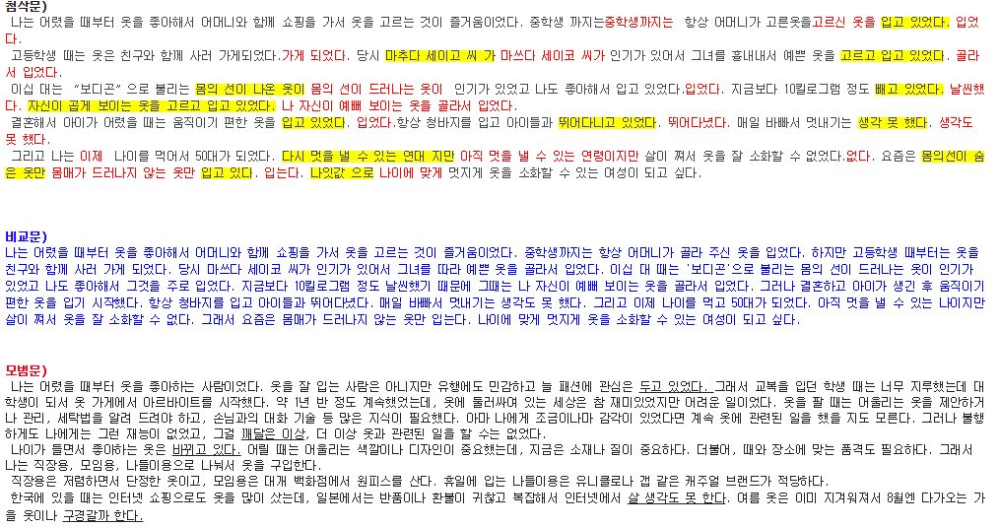
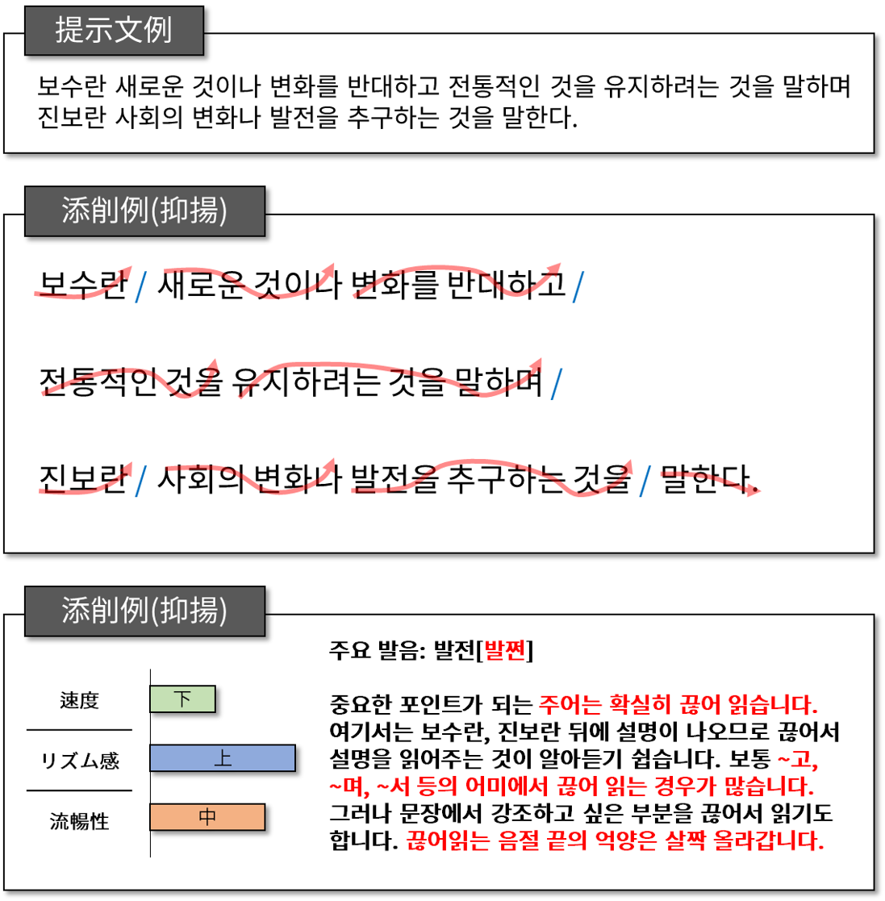
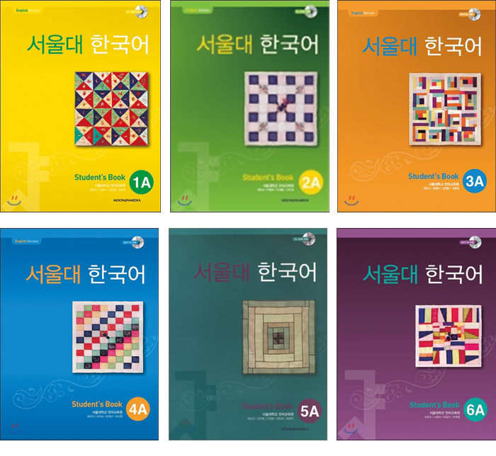

ミリネ重要レッスン
ミリネ重要レッスンのコンテンツ部分
日本全国どこでも、お家で楽しく勉強できるコースです。
『メールで作文トレーニング』
| 特徴 |
|---|
| ① 自分の書いた文章を自然な韓国語に直してもらいます。 |
| ② 表現力をアップさせるために、毎週毎回違うテーマについての作文にチャレンジできます。 |
| ③ 課題は、さらに厳選された文型を必ず使用するよう出題します。 |
| ④ ネイティブの添削とあわせて送付される模範作文を比較し、更に多くの文型や表現に触れることが出来、読解力も向上します。 |
まずは体験から！ 1回 1,800円
■ 1回お試しお申込み期間
ㄴ3月19日(木)までに申し込みフォームを送信してください。
お申込みの方はクリックしてください
➊体験申込の締切： 3月19日(木)
➋体験課題送信日： 3月20日(金)
❸体験添削送信日： 3月27日(金)
❹当講座開始日： 4月3日(金)
＊注意）docomo,au アドレスはハングル課題が文字化けする可能性があるため、お申し込みの際にgmail、yahooメールなどをおすすめします。
詳細
| 授業について | 300~500字作文 作文添削 ＋ ネイティブ比較文 ＋ 模範文 までつく！ 「会話が自己紹介から先に進まない・・・」 「もっと自分の関心のある分野について自由に話してみたいのに・・・」 こういったお悩みはありませんか？ 解決策があります！ 今なら作文トレーニングで、自分の書いた文章を自然な韓国語に直してもらえて、表現力をアップさせることができます。 外国語をマスターするために最もいい方法は、自分の考えを一度文章にしてみて、それが自然なのかどうかをネイティブにチェックしてもらうこと、 そしてそれを何度も繰り返すことです。きちんと作文ができることで表現力をアップさせることができます。 ミリネから毎週出題される様々なテーマについての作文にチャレンジして提出、それを韓国語ネイティブ講師が添削指導いたします。 課題は毎回違うテーマで、さらに厳選された文型を必ず使用するよう出題しますのでマンネリ作文から脱出できます。 ネイティブの添削とあわせて模範作文も送付いたしますので、比較してみることで更に多くの文型や表現に触れることが出来、読解力も向上させられます！ TOPIKの合格を左右するポイントとなる作文試験対策としても最適です。 全国どこでも、メールが使用できる方なら今すぐスタートできます。 |
|---|---|
| 対象 | 初、中、上級(レベルの区別はありません) |
| 目標 | 作文と添削指導の繰り返しを通じて、語彙や文型を効果的に増やし、最も自然な韓国語の表現を身につける。 |
| 授業の流れ | 毎週金曜日にメールで作文テーマと使用すべき文型を送信しますので、テーマに沿った作文を作成して翌週の月曜日夜9時までに sakubun@kaonnuri.comへ提出して下さい。 |
| 日程 | 4月3日(金)から10週間 |
| 教室 | オンライン |
| 募集期間 | ～4月1日(水) | テキスト | ミリネ独自のテキスト(PDF) ※事前にメールにてお送りします。 |
課題参考-例
※次のような課題を出して次週に添削と模範文が送られます。
요즘 쁘띠 성형이라고 해서 칼을 대지 않고도 성형을 할 수 있는 시대가 되었다. 연예인들도 자신의 성형을 당당히 밝히고 있는데, 성형수술, 어떻게 생각하는지 쓰시오
下記に提示された文型を、必ず2つ以上使用すること。
○-다 못해 ～しきれなくて、～してもどうにもならなくて
예) 참다 못해 성형을 했다고 한다
○ㅡ(으)ㄴ가/는가 하면 ～するかと思えば、～する一方で
예) 한번 성형하면 끝인가 하면 중독이 되는 사람도 많다고 한다
○ㅡ(으)므로 ～ので、（だ）から
예) 부모님이 물려 주신 소중한 몸이므로 성형을 해서는 안된다고 생각한다
○ㅡ(으)ㄴ/는 김에 ～するついでに
예) 한국에 관광 가는 김에 성형까지 하고 오는 사람도 있다
모범문)
한국 사람이라고 해서 누구나 성형수술에 관대한 것은 아니지만, 나는 어느 쪽인가 하면 적당한 성형에 찬성하는 편이다.
평생 콤플렉스를 가진 채 고민하며 사느니 조금 고쳐서 자신감을 갖는 것이 더 낫다고 생각하기 때문이다.
내 주변에는 성형중독은 없지만 쌍커풀 수술이나 코 수술 정도는 몇 명이나 있다.
고등학교 때 콧대가 낮은 것이 콤플렉스였던 친구는 대학에 들어가자마자 참다 못해 수술을 했고, 코 수술하는 김에 쌍커풀도 손을 봤다.
그 후 자신감을 얻어 유명한 영어 강사가 되고 멋진 남자와 결혼도 했다.
친구 중 한 명은 교통사고가 나서 보험금을 많이 받게 되었는데 어차피 회사를 1년 정도 쉬기 때문에 그 김에 치아교정을 하기도 했다.
그렇지만, 이렇게 성공한 사람이 있는가 하면 수술을 안하느니만 못하게 실패한 사람도 있다.
그러므로 성형수술은 훨씬 예뻐지겠다고 욕심을 내서는 안 되고 적당히 자연스럽게 콤플렉스만 해결할 수 있을 정도로 해야 한다고 생각한다. (501자)
初対面の挨拶(테마1 :첫인사)
自分はどのような人ですか？初めて会った人に自分をどのように紹介すればよいでしょうか。
(나는 어떤 사람일까? 처음 만난 사람에게 자신을 어떻게 소개하면 좋을지 쓰세요 )
文型）この中から少なくとも2つ以上使って作文して下さい。
○-라고 하다 ～という、～と申す 예) 나는 신림동에 사는 홍길동이라고 한다
○-라고 생각하다/ -는다고 생각하다～だと思う 예) 저는 소극적인 성격이라고 생각한다
○-게 되다 ～ようになる 예) 한국 드라마가 좋아서 한국어를 공부하게 되었다
○-아/어 보이다 ～く見える 예) 나이보다 어려 보인다.
○-를 닮다・비슷하다 ～に似ている 예) 누구를 닮았는가?
模範作文)
나는 일본 도쿄에 살고 있는 사토 리에라고 한다. 25살이고 회사원이다.
벌써 25살이지만, 얼굴이 동그래서 어려 보인다는 말을 듣는다.
어머니가 둥근 얼굴이라서 내가 많이 닮은 것 같다.
회사에서는 기획을 하고 있는데, 스트레스도 많지만 좋은 동료들과 선배들이 이끌어 주어 재미있게 회사에 다니고 있다.
취미는 한국어 공부와 케이팝 듣기이다. 특히, 케이윌 씨 노래를 좋아하고 자주 듣는다.
케이윌 씨 노래를 듣고 한국어를 공부하게 되었다.그리고 개그 공연을 보는 것도 좋아한다.
주말에는 극장을 찾아 좋아하는 개그맨의 공연을 보고 한바탕 웃고 나면 스트레스가 풀린다.
그리고 힘찬 한 주를 시작할 수 있다.
취미는 내 생활의 활력소다.
평일에는 아침 일찍 집을 나가서 저녁 늦게 집에 돌아오기 때문에 취미 생활을 할 수 없다.
올해는 좋아하는 한국어 공부를 조금 더 열심히 해서 자격증을 따는 것이 내 목표다.
우선은 한국어 능력시험 3급에 합격하고 싶다.
합격을 위해서 매주 작문하기로 결심했다. 열심히 해서 올해 목표를 꼭 이루고 싶다. (528자 원고)

イメージをクリックすると拡大できます。
授業料
| 1回当たり | 回数 | 授業料(税抜) | 税込 |
|---|---|---|---|
| 2,180円 | 10回 | 21,800円 | 23,980円 |
生徒の声
| N様｜2019.3月 |
|
毎週韓国語で文章を作ることで、自然な韓国語の表現について考える習慣がついたように感じます。 自分の言葉で文章を作る難しさも痛感しました。添削していただいた文はすごく勉強になりました。 まだ復習しきれていないので、これから1つ1つの添削をじっくり復習したいと思います。ありがとうございました。 |
| U様｜2019.3月 |
|
大きな収穫は、やはり私の作文はただ日本語を韓国語に訳しただけのものだと痛感したことです。韓国語を意識して書いたつもりでも、どうしても日本語脳が働いてしまいます。 決められた文型を使うことも難しかったですが、書き終えた時の達成感があり、楽しくトレーニングを受けることができました。ありがとうございました。模範文を繰り返し書いて、次の10回に活かします。 |
| H様｜2019.3月 |
|
１０回のご指導をありがとうございました。 最初は、決められた文型を入れて文章を作ることに時間がかかりましたが、だんだん慣れてきたとは思います。私は思った以上に、分かち書きと形容詞の한다体が間違いやすく、まだまだ慣れていかないとだめだなと感じています。 ですが間違いなく、韓国語文字を入力することは、速くなりました(笑) 打ち間違いが多くて変な文章内容だったりと、先生も添削に悪戦苦闘されたと思います。 根気よくチェックしていただいて、本当にありがとうございました。 |
| S様｜2018.7月～9月 |
|
10回の課題を終えて 10回の添削、ありがとうございました。とにかく、毎週作文を書くということ自体にとても意味がありました。 また、添削していただけることもそうですが、同じ内容を先生が修正して書いてくださる比較文が勉強になりました。 自分ではなかなか使わないような言い回し（ネイティブならではの言い回し）を知れることはよかったです。模範文も楽しく読ませていただきました。 |
| H様｜2018.7月～9月 |
|
10回の課題を終えて 선생님 그동안 많은 도움을 받았습니다. 저는 요즘 혼자서 공부하기 때문에 특히 말하기와 쓰기가 부족합니다. 이렇게 10번의 작문에 대해 비교문,모범문까지 자세히 가르쳐 줘서 정말 감사드립니다. 이대로 작문 코스를 계속하고 싶은 마음도 있는데 일단 제 작문의 잘못을 다시 공부하려고 합니다. 제가 다시 작문에 도전할 때 선생님의 도움을 잘 부탁드립니다. 건강에 유의하시고 매일매일 행복하시길 바랍니다 (*^^*) |
| N様｜2017.1月 |
|
先生方、大変お世話になりました。 この講座を始めた当初は、翻訳未経験ということもあり、 課題をきちんとこなしていけるのか不安でしたが、 いざ始めてみると10回の課題はあっという間でした。 先生からの添削を受け取るのが、日々の勉強の励みにもなっていたので 終わってしまうとなんだか淋しい気もします。 毎回、先生方の細かな添削を受ける度に、新たに学ぶことが山のようにあり、 また自分の短所も知ることができました。 そして、韓国語の翻訳を生業にしたいと思っていても、なかなか学べる場所は多くないと思います。 私のように学校に通うことが難しい環境でも丁寧な指導を受けることができ、 とても満足しています。 これまでの添削課題を復習しながら、一日も早く翻訳者としてお仕事できるようこれからも頑張ります！ |
| M様｜2016.12月 |
|
10回の課題を終えて 木曜日に課題をもらい、金、土で内容を考え、一度手書き、その後タイピングして月曜日夜に提出という、かなり慌ただしいscheduleの中で、 なんとか一回の期限遅れも無く全ての課題を、なんとか、やっと提出だけはできたというのが正直な所です。 課題について自分の書きたかった事、思ったことを表現するというよりは指定された文型をいかに組み入れるか、字数を達成するかだけで精一杯でした。 慣れぬタイピングにも苦労しました。そんな目茶目茶な提出物でしたが、丁寧な添削だけではなく、 私の作文を先生が書き直して頂いた物が添付されており 非常に驚きました。 まだ全て消化出来てませんので最後の課題が終了したら、じっくりと表現の違いを書き出し、確認させて頂きたいと思います。 先生の書かれた作文まではとても手が回ってないというのが現状です。 非常にコストパフォーマンスの高い講座だったと思います。 |
| A様｜2016.12月 |
|
10回の課題を終えて
벌써 10회가 끝났다니 시간이 지나는 것은 정말 빠르네요. 그동안 내 작문을 체크해 주셔서 감사합니다.과제 내용이 어려울 때나 지정된 문법을 사용해서 작문하는 것은 고생했지만 늘 재미있게 쓸 수 있었어요. 매주 토요일이나 일요일에 타이핑하면서 쓴 작문을 다음 날에 다시 한번 확인한 후에 제출하는 습관이 생기고, 목요일이 오는 것을 기다리는 생활이 너무 바쁘지만 너무 재미있었어요. 내가 쓴 작문을 첨삭해 줄 뿐만 아니라 비교문이 있는 것이 가장 도움이 됐어요. 내가 하고 싶은 말을 한국어다운 표현으로 하는 경험이 늘어나서 비교문을 보고 검토하는 시간이 제일 좋았어요. 그러나 시간이 모자라서 모범문을 잘 볼 수 없어서 아쉬웠어요. |
| Y様｜2016.4月 |
|
こんにちは。先生方、お元気でいらっしゃいますか。作文添削ありがとうございました。
１つの課題に何日がかりで取り組んで提出すると、 またすぐ次の課題が届くという、とても忙しい３ヶ月でしたが、毎回丁寧に添削していただいて、大変勉強になりました。첨삭 한마디（添削のひとこと）まで書いてくださって、 とても嬉しかったです。それにしても自分の考えを韓国語で書くというのは何と難しいことか・・・。思うように書けなくて何度ももどかしさを感じました。 でも、作文は本当にいい訓練になりますね。苦手なパダスギ（ディクテーション）と同じくらい、自分からはなかなかやろうという気にならないので、 今回こういうハードトレーニング（？）の機会を与えてくださって感謝しています。もっと韓国語の勉強を頑張って、少し上のレベルになることができたら、 またチャレンジしたいと思っています。その時はまたよろしくお願いいたします。 解説のオプションもありがとうございました。 とても詳しく、かつ具体的に説明してくださって、申し込んで良かった！と思いました。プリントアウトしてじっくりと読みました。作文も毎回ノートに書いて、 上から赤や青で、添削された部分を書き写しました。最後に첨삭 한마디（添削のひとこと）も書いて、何度も読んでいます。 ところで、毎回、添削してくださった先生はどなたなんだろう？と気になっていました。昨年９月の集中講座でお世話になったあの先生かな？とか・・・。 あの時はみっちり勉強ができて、大変でしたがとても楽しかったです。次は上級クラスに参加してみたいです。ちゃんとついていけるようになるまで、しっかり勉強しますね！ またよろしくお願いいたします。ありがとうございました。 |
| S様｜2016.4月 |
|
10回作文添削、完走できて達成感を感じることができ、とても嬉しく思います。 ただ課題をもらって1週間ない感じですので４，５回あたりでとても書き続けるのが大変でした。そして添削していただいたものや模範文をじっくり確認する時間が ありませんでした。10年以上勉強しているといろんな先生に教えていただく機会があります。一番困るのは分かち書きが先生によって違うということです。 なので混乱をまねき今では初級の頃の方が正しい分かち書きができていたのではないかと思ったりすることもあります。作文添削をやってみようと思った一番の 動機に正しい分かち書きを知りたい、というのがありました。引き続き作文Ⅱも受講しますのでその点もまたご指導いただけたら嬉しいです。 模範文は作文を書く上で大変参考になりました。 今後の作文トレーニングで活かせれたらなと思います。10回の添削、ありがとうございました。 |
| H様｜2016.4月 |
|
作文を添削していただきまして有難うございました。10回の提出は、大変でした。ゆっくり確認する間もなく次の作文を書かないと間に合いません。 文法をどれをどのようにつかうのか未だにわかりませんが、たまった添削文をゆっくり確認しょうと思います。単発でも作文添削を受けてくださるといいと思います。 あまりにひどい作文をよく読んで添削してくださいまして有難うございました。また機会があればお願いします。 |
| E様｜2016.3月 |
|
10回の作文添削、本当にありがとうございました。 今まで、誰かの書いた文章を翻訳するという事はありましたが、自分で文章を書くという経験があまりなかったので、いい機会だと思い受講しました。 まず、「自分で文章を書く」という事の難しさ、大変さを痛感しました。 限られた字数の中で起承転結をまとめ、さらにいかに自然な韓国語で表現するか… これは本当に難しい作業でした。500字というのも、自分が思うより沢山書かなければ埋まらない字数だとわかりました。 また、添削して頂いた事によって、自分がきちんと理解できていなかった部分、勘違いしていた部分等が見えたのは何より良かったと思います。 ネイティブが使う自然な表現に直して頂いた事も、本当に助けになりました。トレーニングⅡでも、さらに多くの事を学んで、もっと自然な表現に近づけるように 頑張っていきたいと思っております。今後ともよろしくお願い致します。 ※受講料も大変ありがたい価格設定でした。何万円…という受講料では、受講したくてもできませんでしたので…。感謝しております‼︎ |
| H様｜2016.3月 |
|
添削指導ありがとうございました。10回の課題提出は、正直なところ苦しかったです(苦;） 毎回のテーマは簡単なのですが、指定した文型を使わなければならないところが難しかったです。 このことで、文章の構成と使う単語などの訓練ができたと思います。 また、丁寧な添削指導で、「韓国語らしい」表現を教えていただいています。 まだまだレベルの低い内容でしか書けませんが、なんだか面白く思えてきたので、新コースにも挑戦してみようと思っています。 今度は誤打が無いように、気を付けます 。 |
| A様｜2016.3月 |
|
私はこの４月に受験予定のTOPIK試験対策としてこのコースを受講しました。 前回の試験で５級に合格しましたが、作文が苦手で、いつも点数が悪くて悩んでいました。今回この作文の添削を受けてみて、 毎週決まった文字数の文章を書くというのが思いのほか時間がかかって難しいことが分かり、毎日少しずつでも書く練習をするのが大事なんだと改めて感じました。 それに、思った以上に誤字や分かち書きの間違いが多かったので、試験では必ず見直しをする時間を作ろうと思いました。 今回の添削は、文字数が３００から５００字だったのですが、上級では７００字くらいの作文が必要なので、コースの選択ができればよいかなと思いました。 |
| U様｜2016.3月 |
|
３か月ご指導いただきありがとうございました。仕事が忙しい時期だったのですが何とか提出することはできました。 ただ添削いただいたものを読む時間が取れなくてまだほとんど読みかえしていない状況です。提出することで精一杯でした。 添削していただいたものをみてもスペルの間違いや単純なもの以外は、あまり良くわからないかもしれないです。 副詞の使い方など辞書でみてもどれを選んでよいか良くわからないことも多いです。深く考えると途方に暮れるのであまり考えもなく書いてしまったような気がします。 語彙が足りない上に文末表現など身に付いていないので何も表現できなくて間違いだらけの初級の作文になってしまい恥ずかしい限りでした。 TOPIKの作文は限られた時間の中でたくさんの分量を書かなければならないので今の私にはかなり厳しい状況です。 練習を重ねていけばたくさん書けるようになるのでしょうか。緊張してネタが浮かんでこないことも考えられます。 作文はどうしてもひとりではできないのでこれからもこのような講座を受けて練習をしていきたいと思います。これからもよろしくお願いいたします。 |
もっと読む...
『メールで音読トレーニング 』
| 特徴 |
|---|
| ① 音読を通して声に出して言うのに自信が付きます。 |
| ② 課題をすることで、語彙・文型・表現 パターンを覚えます。 |
| ③ ネイティブ添削文と模範音声で受講生の問題点を改善します。 |
| ④ 音読トレーニングで話すスピードも速くなり、会話力アップを図ります。 |
| ⑤ 週１回ペースで１０週間レベルアップ出来ます。 |
■ 1回お試し金額 - 初中級: 1,800円 / 中上級: 2,300円
■ 1回お試しお申込み期間
ㄴ3月19日(木)までに申し込みフォームを送信してください。
お申込みの方はクリックしてください
➊体験申込の締切： 3月19日(木)
➋体験課題送信日： 3月20日(金)
❸体験添削送信日： 3月27日(金)
❹当講座開始日： 4月3日(金)
＊注意）docomo,au アドレスはハングル課題が文字化けする可能性があるため、お申し込みの際にgmail、yahooメールなどをおすすめします。
詳細
| 授業について | ★音読とは？ 日々の学習で、語彙、文型、表現、発音など、韓国語に関するあらゆる知識をインプットしていると思います。 それらをアウトプッ トしていますか？ 会話になったとたんに、覚えたことの半分も言えない、聞き取れないことがあると思います。 アウトプットの練習に最も良いと言われているのが「音読」です。「音読」とは文章を声に出して読むことです。 3ヶ月で上達！ご自宅で発音矯正＆音読レッスン！ 教室には通えないけど、韓国語で会話したい方！お待たせしました。 会話には基本文法と語彙力が必要です。 よく使用される表現を覚え、きちんとした発音と抑揚で発話しなければ伝わりません。 ≪語彙・文型・表現 パターンを覚え ＋ 発音・抑揚を自然に≫ この２つのポイントを押さえて自宅でできる会話練習プログラムを作りました。 ミリネが厳選の課題文をたくさん読んで自分のものすれば、聞き取り、会話はもちろん、全般的な韓国語能力が上がること間違いありません。 【 音読トレーニングの方法 】 ❶ 文章の把握：まず、課題を日本語に訳して意味を把握します。 ❷ 文章を見ながら音読15回、スムーズに言えるようになるまで回数は調整してく ださい。記録シートの作成をお勧めします。 ❸ 文章を見ないで音をたよりに音読15回 (次週に)ネイティブの録音ファイルをお送りします) ❹ シャドーイングの練習15回 |
|---|---|
| 対象 | 初中級 / 中上級 (レベルに合わせて選択可能) |
| 目標 | ❶会話パターンを覚える ❷発音・抑揚の矯正 ❸音読トレーニングで話すスピードも速くなり → 会話力が上がる事 |
| 授業の流れ | ❶毎週月曜日：課題をメールにて送信 (初回除く) ❷課題の勉強、読みの練習後、スマホなどで録音 ❸翌週の月曜日21時までに録音ファイルをondoku@kaonnuri.comに提出 ❹毎週金曜日：先生の解説文及び模範発音録音ファイルをメールにて送信 |
| 日程 | 4月3日(金)から10週間 |
| 教室 | オンライン |
| 募集期間 | ～4月1日(水) | テキスト | ミリネ独自のテキスト(PDF) ※事前にメールにてお送りします。 |
初中級
1回につき、8個の課題が出ます。
全10回コースで会話に必要な文型、表現をたくさん覚えられます。
(9回目と10回目は、1-8回目で実施した内容からの出題となります。9・10回目で復習することで、発音の改善を実感できます。）
課題）
❶ -아/어지다 : 形容詞の自然な変化を表す
例）날씨가 좋아졌어요, 얼굴이 예뻐졌어요.
課題：겨울이 가까워지면서 해가 짧아지고 추워졌어요.
※発音ポイント：複合母音、二重バッチム、濃音、激音
❷ -(으)ㄹ 줄 알다 :(習って)することができる、する方法を知っている
例）수영할 줄 알아요?
課題：한국 사람들은 모두 김치를 담글 줄 알아요?
※発音ポイント：ㄹの発音、連音
❸ -(으)ㄹ 줄 모르다:(習って)できない、する方法を知らない
例）저는 영어를 할 줄 몰라요.
課題：저는 면허가 없어요. 운전할 줄 모릅니다.
※発音ポイント：ㅎの発音、二重バッチム、鼻音化
中級～上級
政治、経済、文化、ドラマ、日常 会話の５つの分野に分けてそれぞれ２週間ずつ、全10回のコースで練習を行います。
①１週目は比較的短い文章の朗読が５問、２週目はあるテーマの長め の文章が１問課題に出ます。
②１週目の音読訓練で、中級語彙を増やすのはもちろん、発音、抑揚のチェックも致します。
③２週目は長い文を理解しながら読んで頂き、人に伝わる音読のリズム感の練習に挑戦します。
④担当講師が速度、リズム、流暢性の３分野をチェックし、的確なアドバイスを致します。
⑤ネイティブ講師の音読録音はゆっくりバージョンとナチュラルスピードバージョンの２つをご提供致します。

授業料
| レベル | 1回当たり | 回数 | 授業料(税抜) | 税込 |
|---|---|---|---|---|
| 初中級 | 2,180円 | 10回 | 21,800円 | 23,980円 |
| 中級-上級 | 2,720円 | 10回 | 27,200円 | 29,920円 |
生徒の声
| 初中級10回修了後 N様|2025.3.9 |
| 今回の通信講座を受けてみて、自分の発音がどのように聞こえていたか、ハングルで指摘頂くととても分かりやすく、 独学では改善できなかった部分を学ぶことができて、本当に良かったです。 毎回、丁寧に添削頂き有難うございました。 |
| 初中級10回修了後 K様|2025.3.9 |
| 抑揚が分からず、音声のない文章を上手く読めずに悩んでいたので受講しました。 自分で気が付かなかった発音のクセも教えていただけました。添削された答案と共に送られてくる抑揚表がとても分かりやすくてよかったです。また、添削返却後の練習で矯正されたか心配だったのですが、受講後にフォローアップもあると知り、早速申し込みました。 受講してよかったと思います |
| 中上級10回修了後 K様|2023.9.18 |
| 毎回、発音だけでなく抑揚やスピード、リズム、流暢性まで 丁寧に指導頂けるのは大変貴重な機会でした。 ありがとうございました。 10回の添削を通して、自分の癖に気づかせて頂きましたが、 無意識に出る癖や苦手な部分を克服するのは容易いことではなく、 後半になればなるほど逆に意識しすぎてしまい大変苦戦しました。 折角ご指導頂いたのに、身につきが悪く、 お手数をおかして大変申し訳ございませんでした。 ただ、少しずつ5段階評価の5が頂けるようになったのは嬉しかったです。 講座が終わっても引き続き意識しながら、一歩ずつ改善していきたいと思います。 この度は本当にありがとうございました。 |
| 初中級 N様|2023.7.31 |
| 体験課題の添削ありがとうございました。 読めているつもりでも抑揚が不自然だったり、激音じゃないところで激音になっていたりと1人では気付けない指摘をいただいてとても勉強になりました。 また模範音声が男性と女性の2パターンあったのが非常に参考になりました。 想像以上にとても丁寧な添削だったので継続して講座を受けてみようか対面の教室にしようか締切まで悩んで決めようと考え中です。 |
| 初中級 N様|2023. 6.30 |
| 体験レッスンありがとうございました。 「通信音読トレーニング10回コース」に申し込みます。 体験レッスンの感想ですが、 ・「담글 줄」は濃音になり、よって高く発音する、 など、そもそも分かってなかった部分を 知ることができて、目から鱗でした。 ・自分では言ってるつもりでも、 「こう聞こえてるんだなあ」と 他人に指摘されなければ分からない点が 分かって良かったです。 レッスンに期待することですが、 濃音・激音・오と어・으とか、 日本人が苦手とされるものは、 私ももれなく苦手なのですが（笑）、 特に、自分で出来てないなあ、と悩んでいるのは、 パッチムㄴとㅇです。 현재と형제など、意識して単語だけなら なんとかできているような気もしますが、 文章中や無意識にはとても言い分けられません。 また、궁금などパッチムㅇの次がㄱとかなら、 まだ比較的いいのですが、 홍대のように、パッチムㅇの次がㄷだと、 ㅇがちゃんと出来てないようです。 先日も韓国人にどうしても 왕따（と私は言っているつもり）が通じませんでした。 |
| 中上級 K様|2023. 6.30 |
| 発音・抑揚・速度・リズム・流暢性など、 幅広くご指摘頂けたので、非常に勉強になりました。 他のスクールでは、ここまで丁寧に指摘して頂いたことがなく、 体験してみて良かったです。 実は、濃音化や連音化も出来ていなかったので、 初中級コースの方に申し込もうかと悩んだのですが、 語彙を増やしたいこともあり、中上級にチャレンジすることにしました。 10回終了以降の自分の韓国語の変化を楽しみに頑張りたいと思います。 今後ともよろしくお願いいたします。 |
| 初中級 Y様 |2023. 6.23 |
| 音読トレーニング、ありがとうございました。 私はこれまで、好きな歌の単語や文法を調べたりするくらいの勉強で、聞き取りや発音は全く取り組んでいなかったので、このトレーニングで初めて発音に向き合えて、とてもとても充実した３ヶ月を過ごせました。 独学をするにあたって、発音変化を覚えるのがどうしてもつまらなくて苦痛だったので、そこをとばして文書を読むことだけ勉強していました。ある程度読むことに慣れて語彙が増えたタイミングでこのトレーニングをしたことが、私にはすごく合っていたと思います。 また、自分の発音がどう聞こえているのかをひとつひとつ添削して表にしてくれたのがすごくわかりやすかったです。自分の弱点がわかって、意識できるようになりました。また、解説も韓国語でしてくれたので、知らない単語を調べて読んでいく作業が楽しかったです。 ただ、濃音をどう発音するのかが、最後まで具体的にわからなかったのですが、添削結果では発音できているようなので、これからもシャドーイングで練習していってみようと思います。 |
| 初中級 I様 | 2023. 3.31 |
| 今回のような課題文を録音して添削して頂くようなトレーニングは初めてだったのですが、とても勉強になって良かったです。 録音前に繰り返し声に出して読むことでフレーズも暗記出来るようになりました。 抑揚についてのPDFがとても分かりやすかったです。 丁寧に添削、アドバイス頂きありがとうございました。 音読トレーニングでは、大変お世話になりました。 |
| 中上級 H様 |23.3.17 |
| 毎週音源を送るのは、最初は正直大変でしたが、でも、途中から習慣化されてきて、お陰様で勉強のリズムが掴めたと思います。 音読の練習は初めてだったのですが、まだまだできませんが、この勉強は楽しいなと思いました。 今週こそはパーフェクトを目指そうと！毎回意気込みだけは大きかったのですが、返ってくる添削を見て、「甘くはないな～」といつも思っていました。 でも、だからこそ頑張れたのだと思います。 9回目、10回目は今までの復習なので、それもとても良かったです。 自分の苦手な所をチェックして、改めることができました。 また、いつもきめ細やかな指導をしていただけるので、それもとても感謝しています。 発音は難しいですが、でも、私は声に出して韓国語を読むことが好きという発見もあり、楽しんでトレーニングを行えました。 ありがとうございます。 |
| 初中級 A様 |22.12.27 |
| 体験の添削ありがとうございました。 ほぼ独学で、読み書きはできても自分の口で正しく発声できてるか、イントネーションが合っているか正解を知りたかったので、私にとってはすごく助かるシステムだと思いました。 なかなか習いにはいけないので自分の空いた時間でできるのがありがたいです。 添削は細かくそしてとてもわかりやすく、的確に指摘していただけるのにびっくりしました。 ありがとうございます。 体験の日にちが短かったため、今回自分の都合がつかず練習が十分にできなかったのが心残りでしたが、本申し込みは1週間あるのでじっくりできそうです。 コロナ禍でかなりサボっていたので、また勉強を再開してしっかり身につけていきたいです。 |
| 中上級 C様|22.12.26 |
| 音読講座を2クール受講しました。 音読を全く習ったことがなかったので、たくさん直していただいて、 連音、抑揚などいままで、めちゃめちゃだったことに気付かされました。 まだまだ綺麗な発音には遠いですが、 普段も意識して読めるようになりました。 ありがとうございました! |
| T様|2021.11 |
|
いつも丁寧な添削をしていただき、ありがとうございました。 発音をじっくりと学ぶ機会はこれまで無かったため、自分の癖や苦手箇所を知ることが出来て良かったです。 私自身は復習があまり出来なかったことが課題のため、もう少し続けようかと検討しております。 次回1月からも受講することになりましたら、引き続きどうぞよろしくお願い致します。 |
| Y様|2021.11 |
|
いつもお世話になっています。第10回課題を提出します。 よろしくお願いします。10回を終えることができました。 発音や抑揚が思うように出来ず、悔しい思いもしましたが 毎回細かく丁寧に添削してくださり、励みになりました。 ありがとうございました。 | I様|2021.11 |
|
毎週金曜日に課題が送られて来て、土曜、日曜が提出のための音読練習。月曜、火曜が前回の発音、抑揚の復習という感じで進めてきました。
自分では気づかない発音のくせや、連音、鼻音、流音、L挿入、ㅎの弱音等々、一つ一つテキストを開き確認、復習ができました。 10回はあっという間でした。 これからは、会話に特化した講座、それから、ハン検準二級取得のための講座など、考えております。 また、その節はよろしくお願いします。 |
| H様|2021.03 |
|
今まで音読にほとんど力を入れておらず、ヒアリングや文法ばかりしていました。今回、音読のトレーニングを受けて、自分の発音で、どこが間違えやすいのかが、良くわかりました。
また、どのように発音すればいいのかも、詳しく教えていただきました。あと抑揚も今まで、ほとんど分からない状態でしたので、とても勉強になりました。` 想像以上に、とても勉強になりました。他の講義も受けてみたいなと感じました。` ` これからも、自分の音読のレベルをもっと上げていきたいと思います。 |
| T様 |
|
音読講座10回を終えることができました。 メールでの音声ファイルや添削ファイルのやり取りで進む講座ですが、とてもコスパの良い講座に感じました。 独学の方や日本人講師から韓国語を習っている方で発音が気になる方には是非お勧めしたいです。 短い文章を発音に気を付けて読む練習を続けるのは今までの経験にないことなので、はじめは簡単ではありませんでしたが、 １題でも多く「발음을 아주 잘했습니다 .」がもらえるようにという小さな目標をたてると、最後のほうは楽しく取り組めました。 発音の間違ったところの表や、抑揚表には感激しました。 自分では添削ファイル通りの正しい発音を意識しているつもりなのに、そのように聞こえていないということが 分かったり、どう発音すれば正しい発音に近づけるかのアドバイスもあったり、自分で気づかなかったクセにも 気が付くことができました。 長年、あまり発音を気にせずに韓国語を読んでいたので指摘事項のすべてをすぐに直せるわけではないのですが、 音読の際には、今回分かったことに注意しながら発音していこうと思います。 この講座のおかげか、苦手だったTOPIKの듣기問題が以前より聞き取れるようになった気がするのも、予想外の収穫でした。 10週間お世話になりどうもありがとうございました。 |
| S様 |
|
先生方には大変お世話になりました。 つたない私の音読も丁寧に添削していただき、的確な指摘に、毎回勉強になりました。 これまであまり気にしなかった発音ですが、激音や濃音、連音化などを注意深く聞くようになり、舌の位置などに 注意しながら発音するようになりました。 また、よく知らなかった鼻音化、濃音化も学ぶことが出来ました。 自分の苦手な音も分かりました。 ただ残念なことは、通信教育のため、指摘された点を直そうにも、この発音でいいのかどうか自分では分からない点です。 また、入門から初級になったばかりの私には、文法も単語も少々難しすぎました。 それでも、1週間勉強する習慣がつきましたし、韓国ドラマのセリフも前より聞き取れるようになった気がします。 もう少しレベルが上がったら、また挑戦したいと思います。 本当にありがとうございました。 |
| K様 |
|
先生方には大変お世話になりました。 つたない私の音読も丁寧に添削していただき、的確な指摘に、毎回勉強になりました。 これまであまり気にしなかった発音ですが、激音や濃音、連音化などを注意深く聞くようになり、舌の位置などに 注意しながら発音するようになりました。 また、よく知らなかった鼻音化、濃音化も学ぶことが出来ました。 自分の苦手な音も分かりました。 ただ残念なことは、通信教育のため、指摘された点を直そうにも、この発音でいいのかどうか自分では分からない点です。 また、入門から初級になったばかりの私には、文法も単語も少々難しすぎました。 それでも、1週間勉強する習慣がつきましたし、韓国ドラマのセリフも前より聞き取れるようになった気がします。 もう少しレベルが上がったら、また挑戦したいと思います。 本当にありがとうございました。 |
| K様 |
|
短い間ではありましたが、発音講座にてお世話になり、誠に有難うございました。 スクリプトの読解、音読、シャドーイングを通じて、発音だけでなく語彙力及び文法力も 伸ばすことが出来たのではないかと感じております。大変勉強になりました。 引き続き韓国語学習の方は少しずつ継続する所存ですので、また他講座にてお世話に なるかもしれませんが、今後ともどうぞよろしくお願いします。 |
| IS様｜初中級｜2020.3 |
|
全10回の音読添削、ありがとうございました。 独学で勉強していた私にとって、初めての講座でした。 先生に指摘していただいて初めて分かった、出来てない発音が色々ありました。独学では分からなかったことです。受講して本当に良かったです。 また、発音の本を読んだり、韓国のテレビを見る時も発音や抑揚を気にするようにもなりました。 正直、独学で勉強していた時、そこまで発音を気にしていなかったと思います。 自分の出来てない発音を自覚できたこと、韓国語ネイティブが話す音に注目するようになったこと、そのきっかけとなった今回の受講はとても価値があったと思います。 でも、出来てない発音が出来てないまま終わってしまったことが残念でした。 練習はたくさんしたのですが、通信講座のため、その場で指摘してもらえるわけではないので、私のように音感の悪い（？）人間には、 これが通信講座の限界なのかなとも思いました。 しばらくは独学で韓国語ネイティブの発音や抑揚をマネすることを頑張りたいと思いますが、 いつかまた受講することがあれば、その時は通信講座ではなく、直接の集中講座やスカイプレッスンなどを受けたいなぁと思います。 全10回、本当にお世話になりました。 ありがとうございました。 |
| I様｜中上級｜2019 |
|
10回目まで大変お世話になりました。音読というのは、独学の中でなかなかできません。毎週の課題提出が最後まで出来て、達成感があります。嬉しいです。 10回という短い期間なのも、やりとげられた理由かと思います。長年韓国語を勉強してきたのに、自分の癖をこの講座で初めて指摘していただき、大変感謝しています。 １０回の課題ですが、一見楽そうですが、やってみると意外に苦労しました。何度も録音をやり直し、時間がかかりましたが、何度も練習ができたので良かったです。 独学なら絶対にここまでやりませんから。先生の添削もとても親切で丁寧で、よく分かりました。時々質問をさせて頂き、それにも丁寧に答えていただき、ありがとうございました。 |
| E様｜中上級｜2019 |
|
10回の添削で、大変お世話になりました。 ありがとうございます。 何度も丁寧に指導していただいたのに、自分の発音が全然変わらなくて、自分自身にがっかりしています…。 途中で投げ出したくなったりもしましたが、先生から励ましのお言葉をいただいて、何とか最後の課題まで提出することができました。 これからゆっくりゆっくり復習していこうと思います。 本当にありがとうございました。 |
| IM様｜2019 |
|
10回の音読トレーニング、大変お世話になりました。 韓国語を学び始めてから数年が経ちますが、くせがつく前に始めるべきだったと後悔しています。 頭ではわかっていても、口からは、すぐに、その音を出せないからです。 それでも、トレーニングを受けてから、文章の見方が変わったのを実感しています。 激音、濃音が発生する所や、自分の苦手なㄴ, ㄹ, ㅓを注意して読むようになりました。 また、聞き取りも、どの音で発音しているのか、聞き分けることによって、正しい意味が理解できるようになったように思います。 より正しい韓国語に近づけるように、これからも頑張っていきたいです。 本当にありがとうございました。 |
| I様｜2018.12月 |
|
課題の添削ありがとうございました。私がどのように読んでいるのかチェックしていただき、知ることができて、とても良かったです。 音で聞くだけでなく、解説で、発音、抑揚、音の高さなど、よく理解できました。 とても憂うつだった音読が少しでも好きになり、私の発音も変わっていくように頑張ります。 |
| U様｜2018.12月 |
|
毎回丁寧な解説とご指導ありがとうございました。頭で理解できても、発音や抑揚はその通りには最後までなかなかできませんでした。 しかし濃音、激音、パッチムㅇとㄴ等々、苦手な部分が意識出来るようになりました。 完走出来るか心配でしたが受講して良かったです。 |
| S様｜2018.11月 |
|
まとめ講座有難う御座いました。鼻音化、激音、読み方のルール等を口の動き、舌の位置、動きなど丁寧に教えて頂き、なーるほどと納得することが出来ました。 自分の発音の癖なども自覚することが出来これから練習あるのみと、頑張っていきたいと思います。ありがとう御座いました。 |
| UK様｜2018.3月 |
|
今回で最後の課題の提出になりました。 今までお付き合いしていただきありがとうございました。 そんなに気にする事もなく、たどたどしく話していた韓国語なので 提出するのが恥ずかしかったです。10回をやって来て、濃音、激音、連音を再勉強とかなり意識するようになりました。 抑揚は難しいのですが、抑揚の高低の紙を見ながら、ネイティブの先生の発音を聴きながらシャドウイングできたので、それがとても良かったです。 出来れば２回読んで頂けたらもっと助かったのですが…。 何より韓国語をもっと上手く喋ベリたいと意欲が湧きました。 |
| Y様｜2018.3月 |
| 音読は出来るだけ注意点に気をつけたつもりですがきっとすでに自分の癖がとても強く出てる気がします。 |
| K様｜2018.3月 |
| 10回を終え、なんとなく抑揚が分かって来たような気がします。自分だけで音読をすると、自己流になってしまうので、とても良かったです。 |
| U様｜2018.3月 |
|
勉強する機会を与えていただけて楽しかったです。 スクールが名古屋にあったら通ってみたかったです(ToT) ありがとうございました。 정말 감사합니다 |
| T様｜2018.3月 |
|
私は仕事の都合上、スクールに通うことも難しくとにかく独学で頑張ってきました。 文章を目で追って読んだり翻訳してみたりやってきましたが声に出すことはなかったのでとても新鮮でした^ ^ 最初の頃は発音変化のことなど全く気にせず発音していて間違いが多く、これは独学でやっていたら絶対に知らなかった、気付けなかったととても勉強になりました。 私の発音を先生が聞いてくださって細かく違う部分や発音のアドバイスを教えてくださり、たまには褒めていただけて毎週の評価が楽しみでした^ ^ |
| O様｜2018.3月 |
|
実は、どうやって発音し分けるのか、よくわからなかった激音と濃音が、少しづつ発音できるようになり、 それとともに聞き取りもできるようになってきた気がします！ また、ㄹパッチムの後の濃音化なと、忘れやすい発音規則の穴も、たくさん気づけて、毎週の添削が楽しみでした！ |
| N様｜2017.12月 |
|
・こんなに内容の濃いものが返って来るとは思ってなかったので、感動しました。 ・ネイティブの方が読んで下さる発音がとても聴き取り易いです。 そして、4回も読んで頂けるが良かったです。 |
もっと読む...
『メールでTOPIK作文トレーニング』
| 特徴 |
|---|
| ① 反復して課題提出することでTOPIK長文作文に慣れます。 |
| ② TOPIK中級以上の合格に必要な文法と表現、構成に慣れます。 |
| ③ ネイティブ添削文を通してどこが問題なのか把握できます。 |
オンラインTOPIK作文対策(6回コース)
詳細
| 授業について | 6回通信添削 通信TOPIK添削 ＋ ネイティブ講師の解説がつく！ TOPIKでの合格を目指しているけど、忙しくてなかなか学校に通う時間が取れない方のために、オンラインTOPIK作文コースをご用意致しました。 普段、韓国語で日記をつけたりメモを書いたりする習慣がない方にとっては 作文600～700字というハードルは思いのほか高いと思います。 きちんとした文章を書けるようになるためには正しい作文のルールを身に付けることが大事です。 間違った部分への丁寧な解説が点数アップへとつながります。 週１回の負担にならないペースで、ライティング学習をじっくりするのにも役立つコースです。 |
|---|---|
| 対象 | TOPIKⅡの4級以上を目指している方 |
| 目標 | 作文と添削指導の繰り返しを通じて、TOPIK4級以上の合格を狙う。 |
| 授業の流れ | 毎週金曜日午後3時にメールで作文テーマと使用すべき文型を送信しますので、 テーマに沿った作文を作成して翌週の月曜日夜9時までに sakubun@kaonnuri.comへ提出して下さい。 |
| 日程 | 毎週１回 |
| 教室 | オンライン |
| 募集期間 | 随時募集中 | テキスト | ミリネ独自のテキスト(PDF) ※事前にメールにてお送りします。 |
内容
➊作文の必要事項と分かち書きのルール
➋誤字及び高級表現に修正
❸TOPIKのパターンに慣れる
❹実践練習と添削指導
❺提出した課題をネイティブが書いた時の比較分提供
❻自分の苦手なところを分析
❼模範答案の提供
課題参考 例
※次のような課題を出して次週に添削と模範文が送られます。
주제:IT산업의 발달은 그 편리함으로 새로운 인간관계를 형성하도록 발전하였습니다. 그 수단으로 자리잡은 SNS의 나아갈 방향과 역할은 무엇입니까? 단, 아래에 제시된 내용이 모두 포함되어야 합니다.
❶SNS발달이 우리 생활에 미친 영향은?
❷SNS의 나아갈 방향과 역할은 무엇입니까?
授業料
| 1回当たり | 回数 | 授業料(税抜) | 税込 |
|---|---|---|---|
| 4,480円 | 6回 | 26,880円 | 29,568円 |
生徒の声
| C様 |
|
TOPIK作文対策に参加してとても勉強になりました。作文がずっと苦手だったため後回ししてきましたが、学習歴ばかり長くなってきてこのままではいかないと思い、一大決心で講座に参加しました。 自分が苦手なことろがわかり少しコツもつかめて６００字もがんばれば書けるという自信がつきました。私は１０月に受けようと思っていてまだ時間があるので、あきらめずにコツコツ作文を書いていこうと思います。 ご指導ありがとうございました。 |
| N様 |
|
作文講座に今回初めて参加しました。 韓国で文章を書く練習がなかったので最初は一行書くのに何分もかかってました。 今回授業や宿題でたくさんの文章を韓国語の文章を書く時に必要な基本を憶えることができました。たぶん一人でやるのは難しかったと思います。 |
| H様 |
|
５回を通して、これだけ文章を書いたのは初めてでした。 必要にせまられ、教えていただけると、自分にも書けるのだと感心しました。 この経験は必ず生かします！文章を書くということは中級以上くらいの学習者には韓国語の勉強にとてもいいと思いました。 TOPIKの結果が少しずつでも上がるようにこれからも頑張ります。 이경아 선생님의 授業はとても良かったです。また機会があったら受講します。감사합니다. |
| N様 |
|
선생님들의 섬세한 첨삭, 틀린점에 대한 알기쉬운 설명과 틀리지 않기위해서의 주의점까지 대단히 감사하고 도움이되었습니다. 지난 수강에 대해서는 제가 너무 노력이 부족했던 점만이 후회로 남습니다. 첨삭문 화일을 펼치면 빨강색밖에 보이지 않아 낙심의 연속이기도 했습니다. 하지만, 낙심을 하면서도 자신이 충분한 시간을 가지고 과제에 임하지 못했던 점과 선생님들의 첨삭과 주의점을 충분히 익히지 않은채로 다음 과제에 임하지 못했기 때문이라고 반성을 하기도 했습니다. 때문에 의문점이 있으면서도 질문을 문장으로 정리할 여유조차 없어 질문을 못 했던 점도 아쉽습니다. 소감문이 마치 반성문이 되어버린듯한 느낌입니다. 전 수강의 반성하는 마음을 항상 마음에 새기며 , 앞으로는 적어도 여유를 가지고 과제에 임하려 하오니,제출과제에 어쩌다 좋은 번역문이 있다면 ok 사인 하나 넣어주시면 앞으로 공부하는데 큰 희망이 될 것 같으니 부탁드려도 될까요? 제 과제가 첨삭하시는데 아주 많은 시간을 걸리기게 할 점 매우 죄송하게 생각하지만, 앞으로도 잘 부탁드립니다. (2013.1月) |
| S様 |
|
2011年8月から2013年8月まで丸2年かけて、韓訳＋和訳コースを期限内ぎりぎりで何とか修了することができました。 2年間、ご指導ありがとうございました。 フリーランス翻訳家として仕事をしたいという目標はあったものの、具体的にどのような勉強をすればよいかわからず、貴社ホームページに書かれていた翻訳技術を学べるという言葉に引かれて受講を決めました。 韓国の特許事務所で1年半ほど翻訳の仕事をした経験もあり、課題の中でも技術翻訳や社説、契約書などに関しては、特に困難を感じることもありませんでしたが、小説や文芸作品、映画シナリオなど初めて翻訳する分野は本当に難しかったです。 できれば、翻訳前に翻訳にあたっての指針や注意点などをいただきたかったというのが正直なところです。 それでも丁寧に指導していただいたお陰で、2012年3月頃から現在の居住国、韓国で日本語のフリーランス翻訳者を募集している翻訳会社に履歴書を送り始めましたが、トライアルテストにも合格することができ、いくつかの翻訳会社から韓国語から日本語への翻訳や監修のお仕事をいただけるようになりました。 実際に仕事しながら、韓国語の読解はもちろん、日本語の表現の難しさに頭を悩ませる毎日ですが、これからも日々学び続けながら、頑張っていきたいと思っています。 (2013.10月) |
もっと読む...
『ネットレッスン』
| 特徴 |
|---|
| ① 日本全国どこでもレッスンが受けられます。 |
| ② レッスンの7割は音読や会話となり、 生徒さんにどんどん声を出していただくことをモットーとしております。 |
| ③ 丁寧な解説で文法のポイントを学んだ後は、練習問題で反復練習をし、 「書くチカラ」も身につけます。 |
| ④ 授業中に学習した本文や例文は暗記していたただき、次のレッスン時に、 韓国語で声に出していただきます。 |
詳細
| 授業について | スカイプのビデオ通話を使ったレッスンです。 北海道から長崎まで色々な地域の方がスカイプで学んでいます。 スカイプはインターネット電話で、無料でダウンロードできます。スカイプ同士の通話も無料です。 |
|---|---|
| 対象 | 初級・中級・上級 |
| 目標 | 韓国語で不自由なく話せること |
| 授業の流れ | ➊ テキスト本文の理解（音読、和訳、発音指導、オバーラッピング、シャドーイング） ➋ 文法、語彙、表現の学習（音読、和訳、発音指導） ❸ 練習問題（作文、音読、聞き取り、聞き逃した箇所の和訳） ❹ 学んだことは次回に復習（講師：日本語→生徒さん：韓国語に訳して声に出す） |
| 日程 | 火~金 10:00-21:00 予約制(50分） 土 9:30~19:00 日 10:00~17:00 |
| 定員 | 一人 |
| 教室 | オンライン |
| 募集期間 | 随時 | テキスト |   初級および中級のレッスンではソウル大学語学研究院教科書 「韓国語1A/1B」「韓国語2A/2B」「韓国語3A/3B」「韓国語4A/4B」「韓国語5A/5B」「韓国語6A/6B」を使います。教室で教科書とCDを販売しています。 5級では、『KBSの韓国語ラジオドラマ』（アルク）、『間違いやすい韓国語表現100』初級編・中級編（白帝社）などを教材に使用し、読解・音読・暗誦をします。 6級では、『KBSの韓国語標準発音と朗読』（アルク）、韓国の小説やエッセイ、新聞社説、韓国の昔話(명품 뉴 구비구비 옛이야기)などを教材に使用し、読解・音読・暗誦をします。 |
内容
➊主に音読(声に出して読む)を中心とした指導をしています。音読で大切なのは、その場で先生から、きちんと発音と抑揚の指摘を受け、直してもらうことです。 スポーツ選手のトレーナーのように、発音と抑揚の技術を教え、練習をそばで支えてくれる人が必要なのです。 練習問題も声に出して解いていただきます。
➋そのため授業は予習を前提として進められます。予習課題をしていただくことで週1回や2~3回の授業を無駄なく消化できるようになります。
❸韓国語のテキスト本文や文法の和訳も事前にしてきていただきます。当教室では受講生の和訳に正確なチェックを入れ、より効果的に覚えられるようように指導します。 もちろん和訳していく中で出てくる似ている文型や微妙なニュアンスの違いも漏れなく解説いたします。
❹「オバーラッピング」と「シャドーイング」を使って、ネイティブの話すスピードについて行けるようなトレーニングを行います。
—オバーラッピング:音声と同時に読むこと
—シャドーイング : テキストを見ないで音声だけを聞きながら重ねて言うこと
❺韓国語訳の復習を通して学んだ内容の定着を図る:
１つの課が終わったら、学習した「文型や表現」は次の課を始める前に韓国語訳を行い、どのくらい頭の中に定着したか確認します。 講師が日本語で例文を話します。
★ミリネのレッスンは主に受講生の方が約7割話すことで、聞き取り力・会話力の両方を引きあげます。
入学金
6,000円
授業料
| 12回コース | |
|---|---|
| 目安 | 週1コマ → 4コマ(1ヶ月) × 3ヶ月 = 12回 |
| 1コマ | 4,600円 |
| 授業料 | 12回=55,200円 (税込み:60,720円) |
| 有効期限 | 3ヶ月 |
| 24回コース | |
|---|---|
| 目安 | 週1コマ → 4コマ(1ヶ月) × 6ヶ月 = 24回 |
| 1コマ | 4,100円 |
| 授業料 | 24回=98,400円 (税込み:108,240円) |
| 有効期限 | 8ヶ月 |
| 55回コース | |
|---|---|
| 目安 | 週2コマ → 8コマ(1ヶ月) × 6.8ヶ月 = 55回 |
| 1コマ | 3,700円 |
| 授業料 | 55回=203,500円 (税込み:223,850円) |
| 有効期限 | 1年 |
| 90回コース | |
|---|---|
| 目安 | 週2.5コマ → 10コマ(1ヶ月) × 10ヶ月 = 90回 |
| 1コマ | 3,300円 |
| 授業料 | 90回=297,000円 (税込み:320,760円) |
| 有効期限 | 1年 |
生徒の声
| M様 |
|
ミリネ韓国語教室で教えていただき、よかったこと ●自分はこんなにあいまいに理解していたのか！を発見 和訳によってあいまいに覚えていた文法の理解が進みました。韓国語と日本語のニュアンスの違いや、逆に同じように使えるといった点も参考になりました。韓国の語学堂の授業では母語との違いを教わらないという点においても、日本人の学生にはとても役に立ちます。文法解説がこれまで自分が受講したなかで最もわかりやすかった（本当です）。 ●話せたつもりがそうではなかった…発音の大事さを痛感 発音指導によって、いかに自分が雑に言葉を発していたかがわかり呆然となりつつ、課題が発見できました。そもそも発音ルールを理解していないのか、理解しているのに発音できていないのかの違いを分けることができ、レッスン受講後の音読時間を増やすよいきっかけとなりました。 ●オンライン授業のメリットが音読にあった コロナの影響でマスクをしての学習機会が増えていますが、スカイプを通しての授業はその必要がありません。また個人レッスンの場合、一度に複数の学生の声を聞く必要がないため、一番把握しづらい自分自身の発音やイントネーションの間違いやクセがきっちりわかるという点がメリットでした。 ●受講の目的、自分が希望する期間や時間帯をご相談できた 受講前に、初級後半の文法理解が不十分で伸び悩んでいること、集中的に学習できる期間や時間帯が限られていることを忌憚なくお伝えし、希望に沿った内容で進めることができました。効果が最短距離で得られる機会を提供していただき、ありがたく思っています。 ●テキストに書かれた内容の背景がわかる 韓国語のテキストには、韓国の生活様式が反映された会話や例文が多いのですが、その内容について先生方に教えていただいたり、お話できる楽しみがあります。 まずこれからは、教えていただいたことの定着と音読の練習を進めていきたいと思います。ありがとうございました！ |
| F様 |
|
한국어 공부를 시작한지 오랫 되는데, 좀처럼 자기 시간이 맞춰서 다닐 수있는 교실이 없고,또 불규칙한 근무시간인 직장 때문에
정기적으로 교실에 다닐 수도 없고 자신의 스타일에 맞은 교실을 찾다가 미리내한국어교실을 만났습니다. 제가 편한 시간에 예약을 하고 공부를 할 수 있다는 점이 좋습니다.저의 페이스라고 하더라도 수업내용은 아주 깊이가 있고, 그때까지 몇개 교실에 다녀봤습니다만, 그 중에서도 미리내가 정말 좋았습니다. Skype의 좋은 점은 선생님과 회화하면서 모르는 단어나 표현을 문자로 보내주시고 ,그것을 저장하는 것도 가능하기 때문에 수업이 끝난 후에 보내주신 메시지를 자신의 파일로 정리했습니다. . 특히 받아쓰기 연습은 독학으로는 어렵습니다.처음에는 정말 하나 하나 알아듣는 작업에 시간이 많이 걸렸습니다. 내용을 대충 알아들어도 일언 일구도 빠뜨리지 않고 듣는 것이 아주 힘들었습니다. 그러나 미리 음성 파일을 받을 수 있기 때문에 그것을 출근길에 되풀이해서 듣고 내용을 파악해 집에서 차분히 받아쓰기를 했습니다. 꾸준히 계속해 나가기로 놀랄 만큼 성과가 올라서 실제로 한글검정시험이나 한국어능력시험의 듣기의 점수도 좋아졌습니다.정말 기뻤습니다. 받아쓰기가 외국어학습에 있어서 많이 효과가 있는 것은 알고 있었는데 독학으로 하려고 하면 못알아 듣는 부분의 해소나 교재 테마가 비슷하게 될 수도 있습니다. 그러나 미리내에서는 다양한 테마의 받아쓰기를 학습할 수 있었습니다.수업이 끝나면 틀렸던 부분을 다 고치고 다시 한번 음성을 들으면서 공부를 진행했습니다. 또 교과서의 shadowing과 교과서의 일한번역 연습은 새로운 표현이나 단어 학습, 발음이나 회와표현의 학습에도 많이 도음이 되었습니다. 저는 한국어를 쓰는 일을 하고 있었기 때문에,이렇게 듣기 능력이 늘거나 새롭게 배운 것을 바로 활용할 수 있어서 많이 역할이 되었습니다. 직업과 가정을 양립시키면서 여유시간을 이용해서 공부할 수 있어서 정말로 감사합니다. 지난 번에 도쿄에 갔을 때는 교실을 찾아가서 직접 선생님들을 봐서 아주 반가웠습니다. 만약에 제가 도쿄에 살고 있었으면 절대로 직접 다니고 싶은 교실입니다. 지금 되돌아보니 이렇게 학생을 위해 생각을 짜낸 교재선택이나 수업을 해주시는 교실은 좀처럼 없겠지요?^^ 특히 중고급 한국어 학습자에 있어서 정말 도움이 될 곳입니다.많은 분들이 학습 방법에 부딪쳐서 교실을 전전하고 있다는 것도 자주 듣고 있습니다. 지금까지 아주 친절하게 가르쳐 주신 선생님들께 정말 감사드립니다!!!!! |
Skypeレッスンを終えて |
| SY様｜奈良県 |
|
スカイプレッスンで1級を終えて。 通える場所に通いたい教室があればよかったのですが、なかったので、体験レッスンを受けてから、受講を決めました。 実際に受けてみて、自分が思っていた以上にスカイプでの個人レッスンは良いです。 カメラで口の形も確認できますし、音も充分です。重いテキスト（本当に重いです・・・）を持って教室に行く必要もないので、助かっています。 そしてスカイプレッスンの一番のメリットは、先生の声だけ録音することができるということです。（そのようなフリーソフトがあります） 復習用の音源を作るのが、とても簡単なので、それを聞きながら音読練習をたくさんしています。 5月にレッスンを始めた時には、韓国語でのチャットはそこそこできるのに韓国語での会話となると、全く韓国語が口から出てこない状態でした。 1級のテキストを終えてみれば、間違いながらも覚えた表現や単語が口から出るようになってきました。 簡単な文章を何度も繰り返し音読練習することは、想像していた以上に自分の力になってるように感じます。 2級はさらに使える表現がたくさん出てくるようなので引き続き、音読練習を中心に勉強していくつもりです。 個人レッスンは料金的に自分にとっては敷居が高かったのですが、その分、「元を取らねば」という思いから、予習や復習をしっかりするようになったので、 思い切って受講を決めて、本当によかったです。 授業では、細かいニュアンスの質問に対しても日本語で説明していただくことができるので、とても満足しています。 また発音も、私が嫌にならない程度に直してくださるのが良いです。よく指摘されるところは、意識して音読練習するようにしています。 少しずつですが発音も良くなってるようで、嬉しいです。これからも長く勉強を続けていきたいと思っていますので、どうぞよろしくお願いいたします。 |
もっと読む...
ミリネ教室右側コンテンツ
上級２対面講座
テキストでは学べないミリネだけの週末のプチ留学！

毎月
１週目・3週目
土曜日

詳細は
こちらへ
オンライン個人レッスン
表現力をアップ

個人lessonで
表現力UP

詳細は
こちらへ
オンライン上級講座